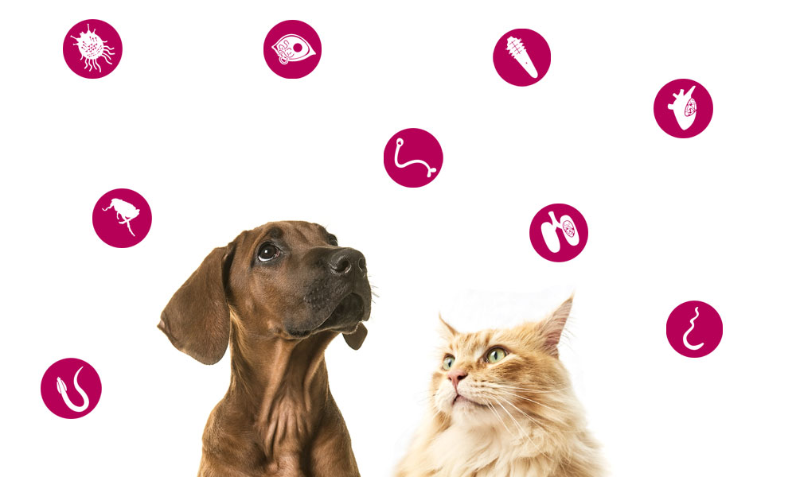

Ingreso al sistema

Llamamos desparasitación interna al hecho de eliminar los parásitos que se alojan en el sistema digestivo. La desparasitación es un factor relevante en los cachorros incluso antes de nacer. Los Parásitos se instalan en el tracto digestivo cuando los pequeños están dentro del vientre de la madre, y se alimentan de todo lo que los cachorros ingieren, pudiendo ocasionarles una desnutrición severa.
Los síntomas mediante los que puedes identificar esta afección, son los siguientes:
E incluso puede afectar a otros órganos si se dejan estos síntomas
Cuando un cachorro no supera las dos semanas de vida, es imprescindible acudir al veterinario para que controle este aspecto. Puesto que las larvas y huevos de los Parásitos son muy resistentes, el veterinario le administrará un producto desde las 2 hasta las 12 semanas, con el objetivo de asegurar que la erradicación interna es total. A posteriori, la desparasitación de tu cachorro se efectuará mediante comprimidos o pasta orales en función del peso del cachorro, y siempre bajo la supervisión veterinaria.